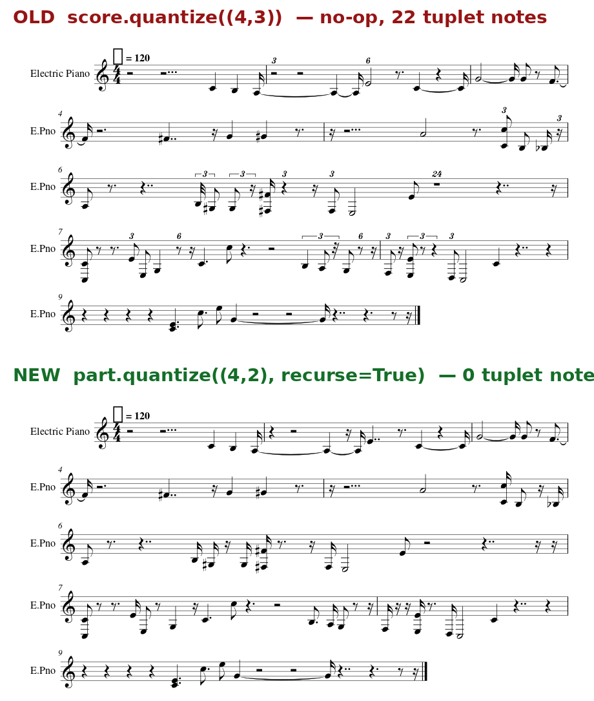
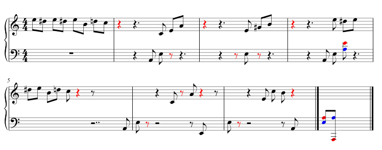
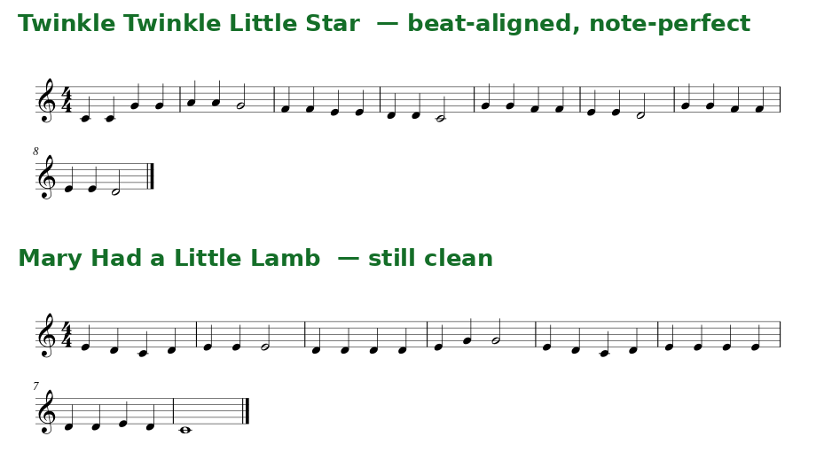
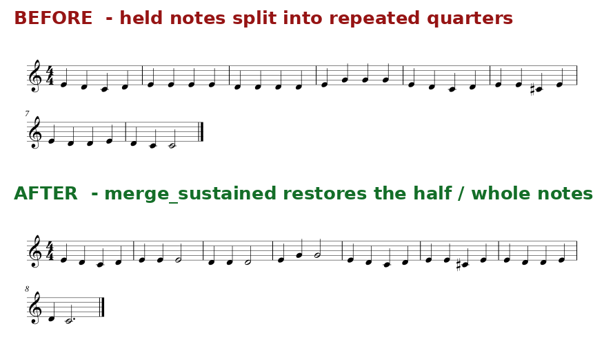
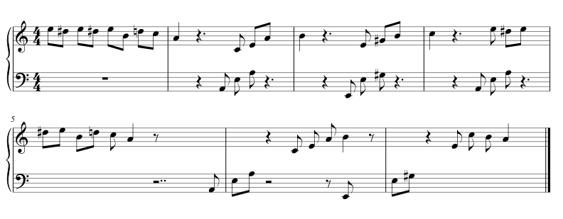

Piano only
The detector is optimized for solo piano, not full-band or multi-instrument recordings.
Auralis transforms a piano recording into notes, readable notation, and precise feedback—so musicians can understand not only what they played, but how they played it.
Auralis is a piano-specialized listening system. Give it a recording and it identifies pitch, onset, and duration for every detected note—even in polyphonic passages with multiple notes sounding together.
The system runs locally, turns the performance into MIDI and sheet music, and can compare it with a reference score. It highlights wrong or missing pitches and reports notes that arrive early or late by measure and beat after accounting for the player’s tempo.
The detector is optimized for solo piano, not full-band or multi-instrument recordings.
Uploaded references currently support a single melody or two independent monophonic hand lines. Same-hand chords and overlapping voices are not graded yet.
Pitch and onset timing are evaluated. Note length, articulation, dynamics, and pedal timing still remain outside the grading system.
Room noise, reverberation, microphone quality, and heavy pedal can reduce transcription and rhythm accuracy.
A performed rhythm does not map perfectly to a written score. Quantization and measure reconstruction can still require correction.
Auralis measures detectable events. It does not yet understand phrasing, tone, gesture, or musical intent like a human musician can.
Each phase solves a different layer of the same problem: hearing accurately, writing clearly, and responding musically.
Built the first audio-to-note pipeline and a web interface that accepts recordings and exports machine-readable results.
Replaced the general model for polyphonic material with a piano-specialized transcription model that runs locally.
Turning precise timestamps into musical rhythm: beats, measures, rests, note grouping, and a score a pianist can actually read.
Comparing a live recording with a known score while separating overall tempo from local mistakes.
Not just feature claims—real outputs from the transcription, rhythm, and feedback pipeline.

Quantization reorganizes detected onsets and durations into a score with musical beat structure.

Pitch and timing findings are placed directly into a pianist-readable grand staff.

The system estimates overall tempo before labeling individual notes early or late.

Post-processing merges detections that belong to one sustained musical event.

Clean reference material makes measure-level feedback precise and explainable.
The goal is not merely a better transcription. It is a more complete understanding of performance.
Unify recording, detection, rhythm reconstruction, and score rendering into one dependable pipeline.
Grade duration, articulation, dynamics, and pedal—not just whether a key began at the right moment.
Align same-hand chords and overlapping voices so richer repertoire can receive trustworthy feedback.
Package Auralis with Docker and explore a scalable cloud architecture for processing beyond one machine.
Interested in music technology, piano pedagogy, transcription, or testing Auralis? I would be glad to hear from you.